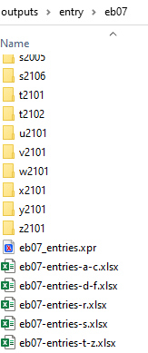

The entry-inventory file differs from the page-inventory in one important respect. All sections under an encyclopedia letter are grouped
together as individual sheets (tabs) within a single spreadsheet.
The spreadsheet is thus stored in the edition folder, since it
contains the information for all sections. Unless
you are working with the entries that start a new letter, you will only need to
create a new tab in an existing entry-inventory and populate it.
Figure: Entry-inventory file location

Procedure
Open the entry-inventory and create a new tab by clicking
the + icon to the right of the existing tabs, at the bottom
of the window.
A new tab is created with generic label.
Double-click on the label for the new tab to rename it, using the
edition-section convention.
Figure: Entry-inventory file
Select any existing sheet and copy-and-paste the column headings into the new
sheet.
Be sure to update the first column headers (A1) with the
new section number.
To populate the sheet, import the data in the
Entry_Stats.txt file, which is automatically generated
by Python and placed in the same folder with the entry files .
In Excel, open the Data toolbar.
Place your cursor in cell A2. On the Data toolbar, select Get External Data > From Text.
Navigate to the folder containing the entry files and select the
Entry_Stats.txt file.
The Text Import Wizard opens.
Use the default settings for step one, and click Next
>.
For step two, click in the window at about column 80 to create a new
break line, between the page number and the "footnotes" comment. Click
Next >.
Click Finish in step 3.
The Import Data window appears. The defaults
should let you import into cell A2 of the existing worksheet. Click
OK.
Check to insure that all data is in the correct column. Add the date when the
entry files were created and initials
indicating that they were validated.